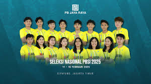
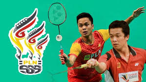
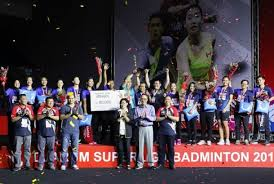

pada tahun 1974 dan berhasil melahirkan banyak atlet berprestasi. Klub ini
dikenal karena fokusnya dalam pembinaan atlet muda sejak usia dini melalui berbagai program
seperti audisi dan kejuaraan. Visi utamanya adalah menjadi klub bulu tangkis terbaik di Indonesia
dan mengharumkan nama bangsa melalui prestasi di kancah internasional
PB.JAYA RAYA

pembinaan atlet muda untuk berprestasi di tingkat dunia. Didirikan pada tahun 1976
klub ini telah menghasilkan banyak atlet peraih medali di tingkat nasional dan internasional
termasuk beberapa medali emas Olimpiade. PB Jaya Raya aktif menyelenggarakan berbagai kejuaraan
seperti Yonex Sunrise Jaya Raya Junior International Grand Prix dan program audisi untuk menjaring bakat-bakat baru..
PB.AXIST
Klub ini baru-baru ini menjadi sorotan karena insiden kecurangan salah satu pemainnya dalam ajang Sirkuit Nasional 2025
yang kemudian ditanggapi dengan klarifikasi dan tindakan tegas oleh klub karena tidak menoleransi perilaku tidak sportif
PB.GSGPLNB

Di kancah bulutangkis tanah air, Sangkuriang Graha Sarana adalah klub yang memiliki rekam jejak cukup panjang
sejak tahun 1987. Namun kemudian nama PLN (Perusahaan Listrik Negara) mengikuti di belakang nama SGS
paska keduanya menjalin kerja sama sejak tahun 2004.
Lahirnya nama SGS PLN itupun hingga kini masih terus terjadi, seiring kerja sama kedua belah pihak yang terus berlangsung
hingga kini memasuki tahun ke-15
Sebagai sebuah klub bulutangkis, keseriusan SGS PLN untuk membina baka-bakat muda bulutangkis Indonesia, khususnya yang berada
di Jawa Barat memang tak bisa diragukan lagi`
PB.MUTIARA

terutama yang berkaitan dengan olahraga dan properti. Artikel yang tersedia
umumnya membahas Pantai Mutiara Sports Club di Jakarta Utara atau berbagai klub olahraga
(voli, renang, sepak bola) di daerah lain